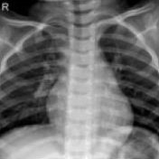
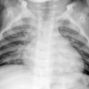
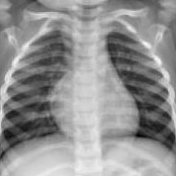
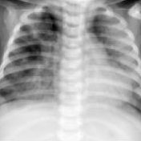
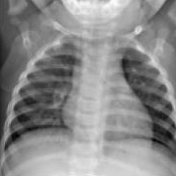
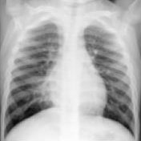
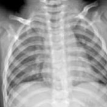
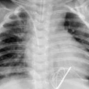
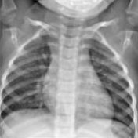
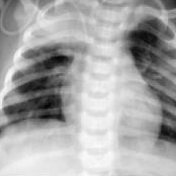

Pneumonia
- Diagnóstico complexo
- Sintomas semelhantes aos de outras condições
Como ensinar um modelo pequeno a imitar um modelo grande, e por que isso importa para levar inteligência artificial ao diagnóstico por imagem. Teoria e prática em Python, classificando pneumonia em radiografias de tórax.
Com as doutorandas Graciella Favoreto e Mariana Suzuki e a profa. Mirela Cazzolato, do GBdI · ICMC/USP.
Conceitos fundamentais de Knowledge Distillation (KD), com exposição teórica e prática dos modelos, sua aplicabilidade e a importância do KD no domínio médico e na classificação de imagens. Na parte prática, construímos um pipeline básico com bibliotecas Python abertas.
Como manter o desempenho de classificação e reduzir o custo computacional de um modelo para detecção de pneumonia?
O curso é ministrado por três pesquisadoras do GBdI (Grupo de Bases de Dados e Imagens) do ICMC/USP: as doutorandas Graciella Favoreto e Mariana Suzuki, que pesquisam inteligência artificial aplicada a imagens médicas, e a professora Mirela Cazzolato.
GBdI (ICMC/USP) · MAInLab (FMRP/USP)
Atua em IA aplicada à saúde, com ênfase em visão computacional para análise de imagens médicas e métodos de aprendizado profundo para apoio ao diagnóstico.
GBdI (ICMC/USP) · Projeto IHealth
Atua com imagens médicas, extração de características de imagens, inteligência artificial e visão computacional.
GBdI (ICMC/USP) · MBA em IA e Big Data
Pesquisa mineração e análise de dados complexos, como imagens e grafos, com aprendizado de máquina, detecção de anomalias e visualização.
Quatro horas, em duas partes: primeiro os fundamentos, depois o código.
Um aperitivo do que é discutido na parte teórica do curso.
Radiografia, tomografia computadorizada, ressonância magnética.
Melhorar a qualidade: redução de ruído, aumento de contraste.
Regiões de interesse e suas características: forma, textura, bordas.
Aprender padrões associados a diferentes condições médicas.
Classificar regiões de interesse e oferecer uma segunda opinião.
Hoje, a etapa de algoritmos é dominada por redes neurais profundas. Arquiteturas como
AlexNetVGG16ResNet18InceptionV3
são de grande porte e consomem muitos recursos computacionais e de memória, o que dificulta levá-las a hospitais e aparelhos portáteis.
Uma técnica para transferir o que um grande modelo pré-treinado aprendeu para um modelo menor. O objetivo é treinar um modelo compacto, o aprendiz, para imitar um modelo maior e mais complexo, o professor.
Em muitos cenários do mundo real, precisão e capacidade não bastam para tornar um modelo útil: ele também precisa caber no orçamento de tempo, memória, dinheiro e recursos computacionais.
O professor não passa só a resposta final (o hard-target): ele passa uma distribuição de probabilidades (o soft-target) que revela quais classes ele acha parecidas. A temperatura T controla o quanto essa distribuição é suavizada. Arraste e veja.
Exemplo ilustrativo, com logits fictícios.
O aprendiz reproduz diretamente a predição final (os logits) do professor.
O aprendiz busca aprender as representações internas das camadas profundas do professor.
Transfere a similaridade entre camadas, características ou amostras.
A abordagem tradicional, em dois estágios: o professor é treinado antes e depois guia o aprendiz. É a usada no curso.
Professor e aprendiz são atualizados simultaneamente, num framework treinável de ponta a ponta.
A mesma rede é professor e aprendiz: o conhecimento das camadas profundas é destilado para as mais superficiais.
Poucos dados médicos, anotação custosa e maior risco de overfitting.
Características complexas de órgãos, tecidos e lesões.
Conhecimento específico, que pode não valer para múltiplas patologias.
Entender “o quê” e “de onde” vem o conhecimento do aprendiz.
O aprendiz, menor, pode ser implantado em aparelhos portáteis e em hospitais.
O professor aprende uma representação comum a várias modalidades; o aprendiz simula a ausência de modalidades na prática clínica.
O aprendizado iterativo evidencia o local das lesões, e o professor simula o processo de diagnóstico feito por profissionais de saúde.
Na segunda parte, montamos passo a passo um pipeline de destilação em PyTorch: um professor grande e já treinado ensina uma rede minúscula a classificar radiografias de tórax como normal ou pneumonia.
Radiografias de tórax padronizadas, da coleção aberta MedMNIST, rotuladas em duas classes. É uma base pública, leve e pronta para uso, ideal para experimentar KD em pouco tempo.










O ambiente mínimo para acompanhar a prática.
Uma ResNet18 com pesos já treinados. É o modelo mais pesado do curso.
teacher = build_teacher().to(device)
print(f"Teacher parameters: {count_parameters(teacher):,}")
# Teacher parameters: 11,171,266Uma SmallCNN treinada sem a ajuda do professor, que serve de baseline para a comparação.
student = SmallCNN().to(device)
print(f"Student parameters: {count_parameters(student):,}")
# Student parameters: 23,426O professor, já treinado e congelado, orienta uma nova SmallCNN combinando soft e hard-targets.
student_kd = SmallCNN().to(device)
TEMPERATURE = 4.0
ALPHA = 0.5
EPOCHS = 10
optimizer = torch.optim.Adam(student_kd.parameters(), lr=1e-3)
criterion = nn.CrossEntropyLoss()Comparamos professor, aprendiz baseline e aprendiz + KD com diferentes temperaturas, usando acurácia e matrizes de confusão.
624 radiografias · passe o mouse nas barras para ver os acertos
de acurácia para o aprendiz treinado com destilação (T = 4), em relação ao mesmo aprendiz treinado sozinho.
da distância entre aprendiz e professor recuperada pela destilação, com um modelo cerca de 477 vezes menor.
| Modelo | Parâmetros | Acurácia | Falsos positivos | Falsos negativos |
|---|---|---|---|---|
| Professor (ResNet18) | 11.171.266 | 89,6% | 56 | 9 |
| Aprendiz (SmallCNN) | 23.426 | 81,2% | 108 | 9 |
| Aprendiz + KD (T = 4) | 23.426 | 84,8% | 80 | 15 |
| Aprendiz + KD (T = 10) | 23.426 | 83,7% | 75 | 27 |
Repare no trade-off: a destilação reduz os falsos positivos do aprendiz (108 → 80 com T = 4), mas aumenta os falsos negativos (9 → 15), ou seja, pneumonias que passam despercebidas. Em aplicações clínicas, esse tipo de troca precisa ser avaliado com cuidado, e é um dos desafios práticos discutidos no curso.
Valores da execução de referência apresentada no curso. Ao rodar os scripts, seus números podem variar um pouco.
Todo o material da aula, para revisar a teoria e reproduzir a prática em casa, com seus próprios dados.
Os slides usados na aula serão publicados aqui. Volte a esta página depois do curso: o link aparecerá neste cartão.
Toda a parte teórica da aula, para revisar com calma.
Os scripts serão publicados aqui. Volte a esta página depois do curso: o link aparecerá neste cartão.
Baixe ou abra o código e reproduza cada etapa do pipeline.
Para revisar os conceitos e ir além do curso.
Visualização interativa de uma rede convolucional, camada por camada. Ótima para revisar convolução e pooling.
Coleção padronizada de bases de imagens biomédicas, de onde vem a PneumoniaMNIST usada na prática.
Tutorial oficial com variações de destilação, para continuar estudando depois do curso.
Programação completa da Escola Avançada de Big Data Analysis 2026, do ICMC/USP.
Grupo de Bases de Dados e Imagens do ICMC/USP, onde as ministrantes desenvolvem suas pesquisas.
Trabalhos que fundamentam o conteúdo do curso.